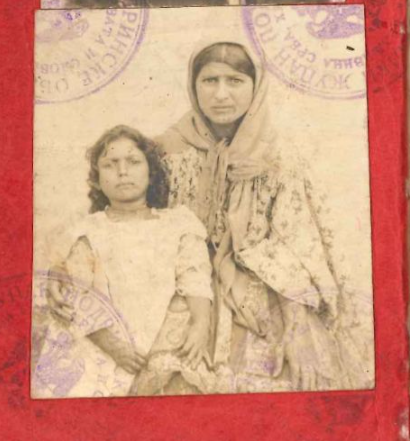
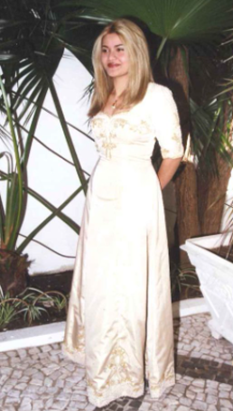
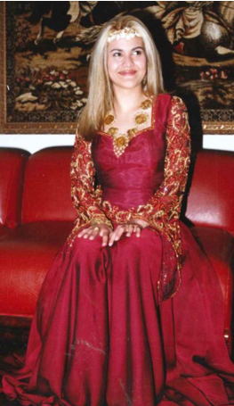
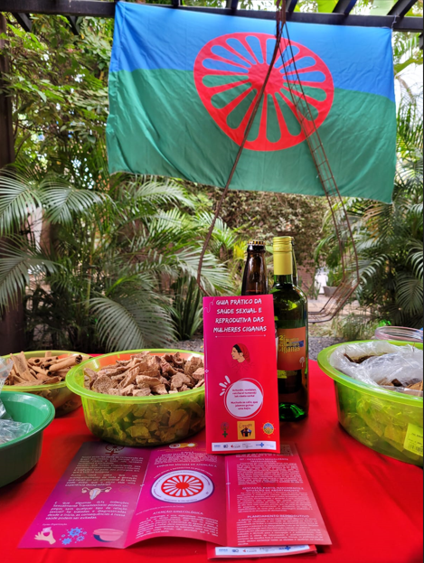
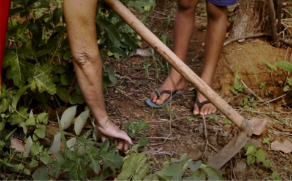
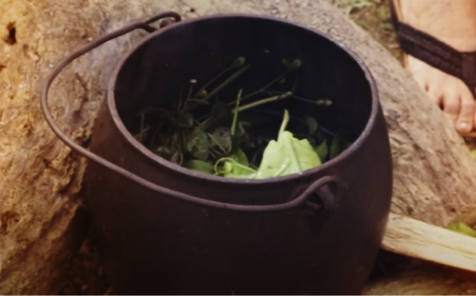
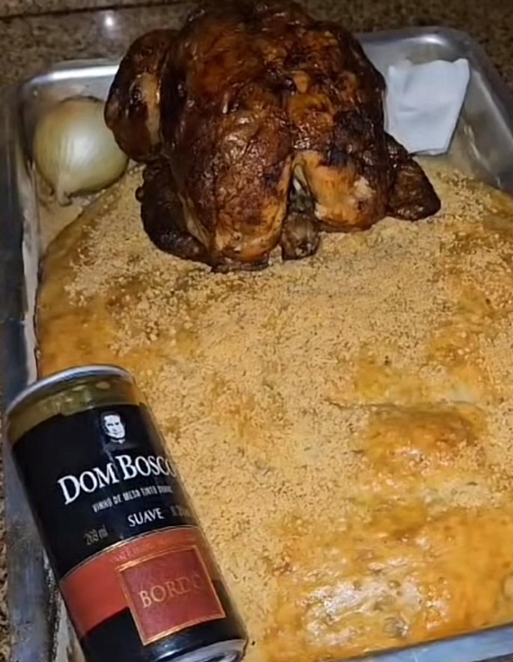

Saúde sexual e reprodutiva da mulher cigana e as interfaces com aspecto de gênero.
- Conhecer a dinâmica e as especificidades que abarcam a interseccionalidade entre gênero e raça na saúde sexual e reprodutiva das mulheres ciganas, considerando os conceitos relacionados aos saberes tradicionais de mulheres ciganas.
- Relacionar as particularidades em questões que envolvem a gravidez, parto e os impactos do racismo e da violência de gênero de mulheres ciganas, somados aos desafios e barreiras culturais na busca pelo atendimento em saúde.
Tratar sobre questões de gênero dentro de algumas comunidades ciganas ainda hoje pode gerar certo desconforto, motivo pelo qual a abordagem deve ser cercada de diálogo constante e de fácil compreensão. Assuntos como saúde sexual e reprodutiva de mulheres ciganas podem ser um tabu encontrado em algumas comunidades, dificultando a abordagem ao tema para que se possibilite o acesso à informação. O racismo institucional afasta os povos ciganos da educação básica, o que favorece a questão do analfabetismo dentro das comunidades, principalmente no que tange às mulheres ciganas, que em sua maioria ainda desconhecem seus direitos em relação à atenção primária para saúde sexual e reprodutiva.
Os povos ciganos são diversos com costumes e tradições que variam dentro dos troncos étnicos. Isso significa que nunca se pode falar de um ponto específico como se fosse a regra dentro de todas as comunidades ciganas do Brasil, é preciso se atentar à especificidade da saúde sexual e reprodutiva de cada mulher cigana como algo pontual para cada uma em sua realidade. No entanto, algo em comum entre todas é a situação de invisibilidade que cerca a luta diária das mulheres ciganas. Considerando que o cuidado é algo atribuído à mulher cigana, esse cuidado é sempre com o outro, primeiro prezando pela comunidade e pela família para depois preocupar-se consigo mesma. Com ela está o importante papel da reprodução social de sua comunidade, manutenção da cultura e educação dos filhos (MINISTÉRIO DA SAÚDE, 2016).
Embora a etnia cigana apresente características patriarcais, o que não é exclusivo das comunidades ciganas, a crescente visibilidade das pautas de emancipação feminina na sociedade tem levado as mulheres ciganas a buscar mais espaço para suas demandas e especificidades. É essencial promover diálogos constantes para que se consiga avançar e garantir os direitos dessas mulheres, que muitas vezes enfrentam desigualdades e vulnerabilidades. Também é importante considerar a complexidade de abordar a saúde sexual e reprodutiva feminina no contexto cigano, sendo crucial compreender a realidade das mulheres ciganas, levando em conta os três principais grupos étnicos (Romnis, Calins e Sinti), para reconhecer a particularidade dos costumes e tradições de uma cultura milenar e garantir o acesso à saúde.

Saúde sexual e reprodutiva da mulher cigana: Compreensão e Direitos
O tema da saúde sexual e reprodutiva da mulher cigana não é algo a ser comumente pautado internamente, tendo em vista que as dinâmicas culturais dificultam a abordagem do tema dentro de algumas comunidades que ainda hoje, de certa forma, carregam características patriarcais em seus costumes, sendo a sexualidade um tema extremamente sensível a ser tratado. Assim, considerando a complexidade de se tratar a saúde sexual e reprodutiva dentro do contexto dos povos ciganos, para que a sensibilidade que envolve essa questão seja superada com responsabilidade, os diálogos constantes são necessários para que se garanta o acesso a este direito.
Considerando que as políticas públicas e normativas específicas voltadas à saúde das mulheres ciganas ainda necessitam de desenvolvimento e consolidação, o recorte de gênero no âmbito das comunidades permite compreender as especificidades relacionadas ao acesso das mulheres ciganas aos serviços de saúde e aos exames preventivos. A atenção à saúde das mulheres ciganas ainda demanda o fortalecimento de políticas e ações específicas no Brasil, sendo escassas as informações sobre as condições de saúde em que vivem. Diante disso, ainda nos tempos atuais muitas mulheres ciganas se privam e apresentam resistência na busca de atendimento ginecológico, exame preventivo e acompanhamento pré-natal (GOLDFARB; LEANDRO; DIAS, p. 853), pois encontram situações de barreira no acesso aos serviços de saúde sexual e reprodutiva, sendo a geração de conhecimento na base algo urgente nos dias atuais, guiada pelo acolhimento, diálogo sensível e de fácil compreensão que considere a diversidade e as especificidades socioculturais que envolvem os povos ciganos.
Leia o item “Saúde da mulher cigana” da cartilha “Subsídios para o Cuidado à Saúde do Povo Cigano”, desenvolvida pelo Ministério da Saúde em parceria com a Associação Internacional Maylê Sara Kalí (AMSK). Acessar a cartilha (página 13)
Dentro das comunidades ciganas as mulheres têm um papel central na manutenção dos costumes e tradições, no cuidado com a família e com os membros de sua comunidade, com as particularidades e costumes de acordo com a realidade de cada família, no entanto, o autocuidado é sempre deixado para depois. Em algumas famílias, o casamento entre os 13 e 16 anos ainda é algo comum, assim, algumas comunidades entendem que a partir da primeira menstruação, caso a menina ainda esteja na escola, os estudos devem ser deixados para preparar-se ao casamento, compreendendo as dinâmicas e responsabilidades que envolvem a vida adulta, pois o casamento é o marco inicial para a vida dentro da comunidade. A prova da virgindade ainda é algo praticado e de grande importância nos casamentos entre ciganas e ciganos dentro da etnia Rom, sendo comum a utilização de dois vestidos distintos, conforme explicado a seguir:

Vestido branco no primeiro dia para demonstrar a pureza.

Vestido vermelho no segundo dia de casamento para simbolizar a honra da mulher em manter sua virgindade até o dia da cerimônia.
Primeiro e segundo dia de casamento realizado na cidade de Curitiba, casamento entre famílias de etnia Rom, subetnias Machuaia (família da noiva) e Kalderash (família do noivo) / Ano:2000.
Fonte: Acervo família Iovanovitchi
A importância de considerar os aspectos que envolvem o casamento na etnia Rom é de suma importância, considerando que são escassos os materiais acadêmicos que tenham como foco em sua pesquisa as mulheres de etnia Rom, bem como as questões enfrentadas considerando a preservação dos costumes trazidos do Leste Europeu até os dias atuais.
O uso das ervas, plantas medicinais e métodos anticoncepcionais. Doenças, infecções sexualmente transmissíveis e métodos preventivos
O uso de ervas, raízes e plantas medicinais para a produção de chás e garrafadas estão entre os saberes tradicionais preservados e repassados entre mulheres ciganas em algumas comunidades, com maior recorrência dentro da etnia Calon, contexto em que o uso de medicamentos farmacêuticos não é comum. As ervas são utilizadas ainda atualmente para o tratamento de doenças e infecções sexualmente transmissíveis, acompanhadas de uma alimentação natural e saudável. Assim, mulheres ciganas de algumas comunidades relacionam as doenças e a necessidade de exames preventivos como consequência do mundo urbano e sedentário, relatando que em épocas de itinerância e “andança” as doenças não eram comuns.

Veja o relato a seguir:
“Cigana não fazia exames! Depois que nós demos de morar foi que cigana veio fazer exame, fazer operação, que nós num fazia não! Nós nunca fizemos exame grávida, nunca fizemos exame de útero, nós num sabia o que era um exame de útero, um exame de prevenção, o que era ferida em útero.” Dolores, 76 anos
(GOLDFARB; LEANDRO; DIAS, p.863)
Na série “Diva e as Calins de Mato Grosso”, apresentada pela Associação Estadual das Etnias Ciganas de Mato Grosso (AEEC-MT), a tradicionalidade do uso de ervas e plantas é muito retratada pelas mulheres. Ao longo dos 5 episódios, Mestra Diva, Terezinha Alves, Nilva Rodrigues, Irandi Rodrigues e Nerana Rodrigues Pereira trazem suas vivências de infância, relembrando as memórias da vida na barraca e as alegrias e dificuldades enfrentadas. No entanto, algo em comum em todos os episódios é a presença da tradicionalidade do uso de ervas e plantas medicinais, acompanhada de relatos de como é algo repassado entre as mulheres da família, e como em tempos de itinerância não havia doenças dentro da comunidade. No primeiro episódio da série, Mestra Diva relata como conseguiu curar sua mãe com o “vidro de raizada” feito por ela, bem como outras mulheres com diversos problemas de saúde, incluindo infecções uterinas. Assim, deve-se compreender inicialmente que a tradição da “medicina do cigano” é repassada entre gerações de mulheres que creem na medicina da natureza, na cura com aquilo que a natureza oferece, e não creem que os remédios quimicamente produzidos sejam bons ou apresentem curas para a saúde. Entre tanta sabedoria repassada dentro dessa série, demonstra-se como o mundo não cigano deve aprender com essa tradicionalidade e valorizar essa sabedoria ancestral dos remédios reais que vêm da natureza, sem química, que curam internamente e externamente.

Imagem da série Diva e as Calins do Mato Grosso. Episódio “Mestra Diva”.
Fonte: Aluízio de Azevedo

Série Diva e as Calins do Mato Grosso. Episódio “Fogo”.
Fonte: Irandi Rodriugues
Assista aos 5 episódios da série “Diva e as Calins de Mato Grosso”, apresentada pela Associação Estadual das Etnias Ciganas de Mato Grosso (AEEC-MT), que mostra a tradicionalidade do uso de ervas e plantas retratada pelas mulheres.
Quando se considera o contexto da vivência dentro das barracas itinerantes, em algumas comunidades não é possível a instalação de banheiros pela ausência de políticas públicas que garantam a vivência das tradições com dignidade. Dessa forma, a questão da insalubridade acarreta maior sucessividade de mulheres ciganas a doenças infectocontagiosas que se soma à dificuldade de diagnóstico.
Na etnia Rom o uso de ervas e plantas medicinais não é algo comum, pois considerando o contexto da urbanização que em sua maioria estão inseridos, o uso de medicamentos farmacêuticos se tornou uma prática comum para as mulheres ciganas, estando muito presente a problemática da automedicação. Com relação à prevenção, a falta de informação inviabiliza a grande maioria dos contraceptivos modernos. Ainda, por vezes ocorre a falta de adesão masculina no uso contínuo de preservativo, bem como a falha na ingestão de contraceptivos orais, considerando que, por vezes, algumas mulheres seguem sobrecarregadas com o cuidado da família a ponto de esquecerem de realizar o uso do contraceptivo.
Gravidez e atenção ao parto
Dentro de algumas famílias ciganas a gravidez ainda pode ser considerada o momento mais esperado após o casamento, para que se realize a união entre as famílias e que se aumentem os membros. Considerando que ainda ocorrem os casamentos entre os 13 e 16 anos, é comum que ocorra gravidez na adolescência. No entanto, é importante considerar que, no contexto dos povos ciganos, o casamento simboliza o marco inicial para a vida adulta. Assim, a visão de ser uma “gravidez na adolescência” é inserida em uma lógica de mundo que não é pensada dentro da realidade de algumas comunidades.
Em algumas comunidades da etnia Rom, é importante considerar:
Comumente é realizado por meio de convênios de saúde, devendo ser realizado por médicas mulheres, com exame de toque sempre evitado.
É escolhido pela via cesárea, tendo a crença de trazer impureza para o recém-nascido o parto normal.
Além disso, as mulheres gestantes recebem cuidados de toda a comunidade, sendo muito importante a questão de atender aos “desejos” de alimentos, sendo visto como algo muito ruim permitir que a gestante fique com vontades.
Ainda, o período de pós-parto envolve rituais que devem ser realizados dentro da comunidade para que o recém-nascido tenha boa sorte em sua vida. Um dos exemplos de ritual é a babine, que deve ocorrer ainda no período de “dieta”, em que membros da comunidade levam até a casa da família alimentos simbólicos para bons presságios na vida do recém-nascido.

Importante ressaltar que todos os rituais que marcam esse período vieram como tradição desde o Leste Europeu e, sendo assim, são repassados pela via da oralidade em todas as famílias de etnia Rom e, até os tempos atuais, são realizados seguindo fielmente o que ensinaram os mais velhos.
Já em algumas comunidades da etnia Calon, destacamos as seguintes características em relação às mulheres mais velhas:
- O acompanhamento pré-natal e os exames de rotina ainda podem gerar certa resistência.
- Tais mulheres compreendem que em tempos antigos não necessitavam de acompanhamentos e as crianças nasciam saudáveis.
- Os partos realizados pelas mulheres mais velhas das comunidades infelizmente não é algo tão comum.
O saber tradicional popular que envolve a figura das “parteiras” nas comunidades ciganas demonstra como a educação popular em saúde sempre foi realizada dentro dessas comunidades tradicionais pela via da oralidade, envolvendo para além da questão do parto, considerando todo o ritual e as questões de fé e tradicionalidade que abrangem esse momento tão importante.
Vejamos alguns relatos a seguir:
“As ciganas quando tão grávida é tudo no pré-natal, é no exame, é batendo ultrassom... Cigana não morria de parto... Nem também eu não alcancei nunca mais cigana morrendo de parto não, nem nós morando, Graças a Deus não!" Dolores, 76 anos
(GOLDFARB; LEANDRO; DIAS, p. 861)
“Sabe quando cigano tinha saúde? Era quando andava pelo mundo! Depois que veio morar pega essa doença, outra, e outra... Tudo é queixa de quem mora! Se se queixa de certas doença é porque mora, né? Cigano podia ter toda doença, doença nós todos tem, né? Mas durante o período do gravidez nunca adoecia...” Jôrie, 76 anos
(GOLDFARB; LEANDRO; DIAS, p. 861)
Em ambas as etnias o momento de parto e gestação é celebrado e envolve o cuidado e a importância da família, tão preservada em sua tradicionalidade dentro da cultura dos povos ciganos. O cuidado com as mulheres ciganas durante a gestação e após o parto é diferente do cuidado pensado dentro da lógica ocidental. Dentro de algumas comunidades, normalmente o cuidado é realizado pelas mulheres mais velhas, que repassam a tradicionalidade de geração em geração pela via da oralidade.
O atendimento de mulheres ciganas: abordagem e especificidades
Para que se garanta o acesso de mulheres ciganas ao atendimento em saúde sexual e reprodutiva, inicialmente é primordial que os profissionais de saúde conheçam e respeitem a realidade e as especificidades que envolvem essas questões dentro de cada comunidade.
Assim, é fundamental assegurar o acesso a diagnósticos precoces e tratamentos adequados para doenças e condições de saúde, de forma a garantir que mulheres ciganas exerçam dignamente seus direitos, especialmente no que tange à autonomia sobre suas vidas e corpos.
Para evitar que a sensibilidade que envolve as questões de saúde sexual e reprodutiva dentro das comunidades prejudique a saúde das mulheres ciganas, é necessária a compreensão de suas realidades, somada ao diálogo informativo, acessível e cuidadoso, sendo essencial a organização dos profissionais da rede de saúde para que se considere a humanização no atendimento às mulheres ciganas.
A Política Nacional de Atenção Integral à Saúde da Mulher (PNAISM) hoje, é o que atende a todas as mulheres do Brasil, incluindo as mulheres ciganas. No entanto, a necessidade é de que se considere as especificidades culturais e tradicionais nesse contexto para que se garanta o acesso.
A necessidade de informar é o passo inicial para que se garanta uma vida digna a essas mulheres, respeitando a realidade e os aspectos tradicionais e culturais que envolvem o paradigma da saúde sexual e reprodutiva. O racismo somado à violência de gênero impossibilita que grande parte dessas mulheres consiga acessar o direito à saúde garantido constitucionalmente a todos os cidadãos brasileiros. Sendo assim, as políticas públicas precisam chegar até essas mulheres para que se garanta uma vida digna, compreendendo principalmente que as tradicionalidades devem ser incorporadas aos seus acompanhamentos e tratamentos.
Conheça o Guia profissional sobre mulheres ciganas, saúde sexual e reprodutiva com informações direcionadas aos profissionais e gestores que atuam no Sistema Único de Saúde.